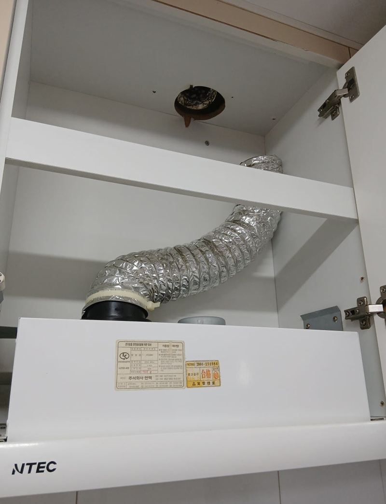
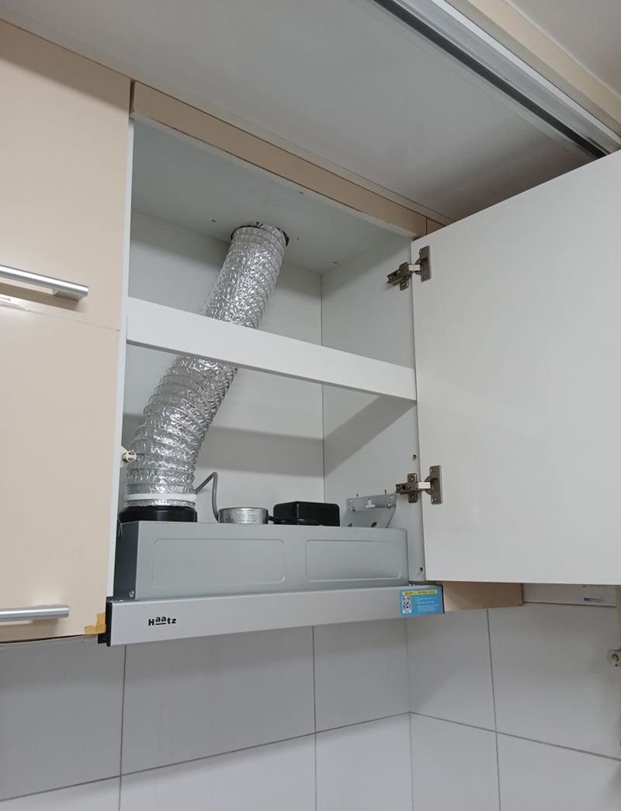
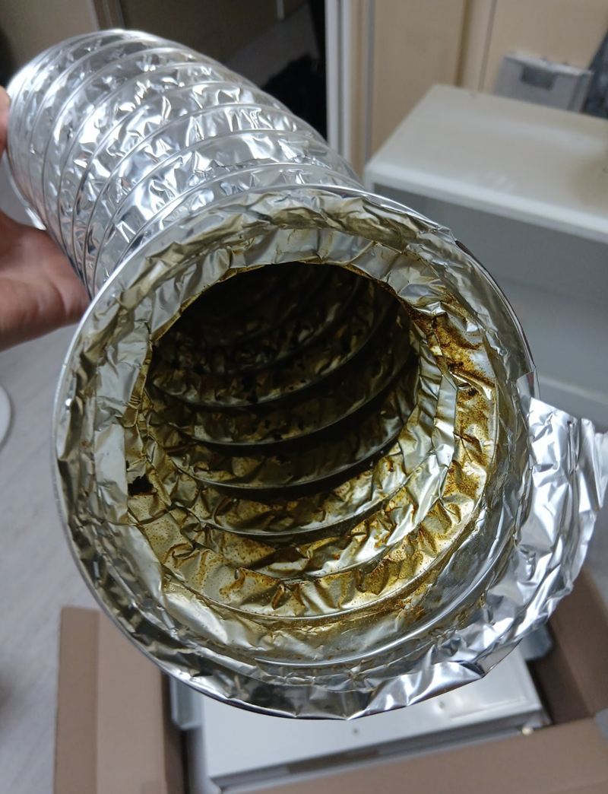
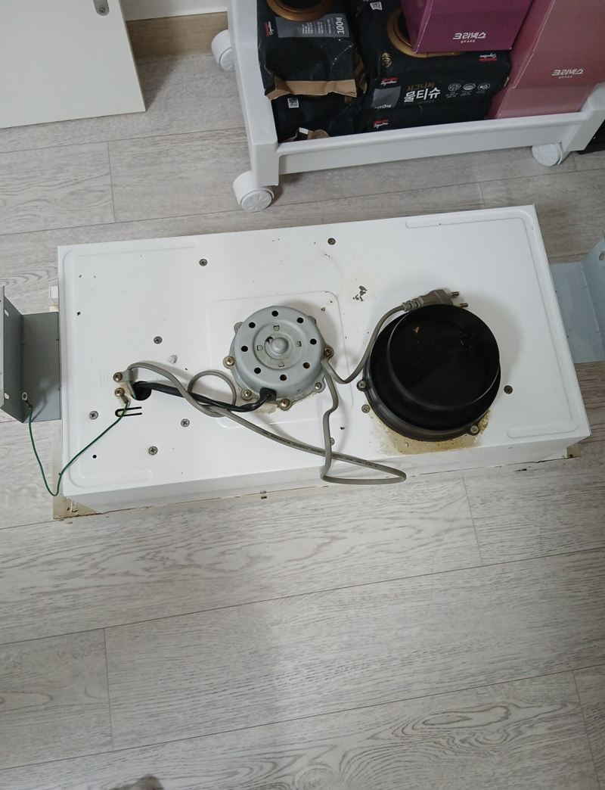
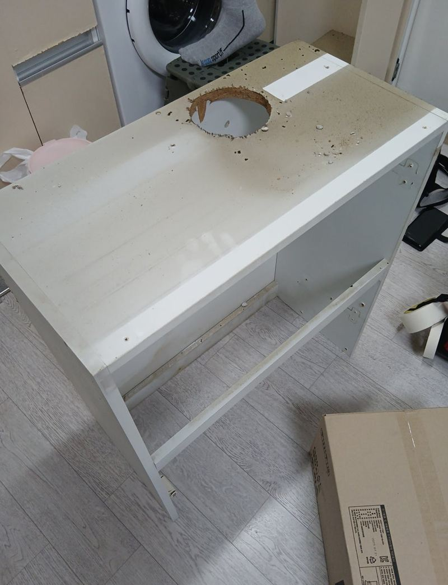
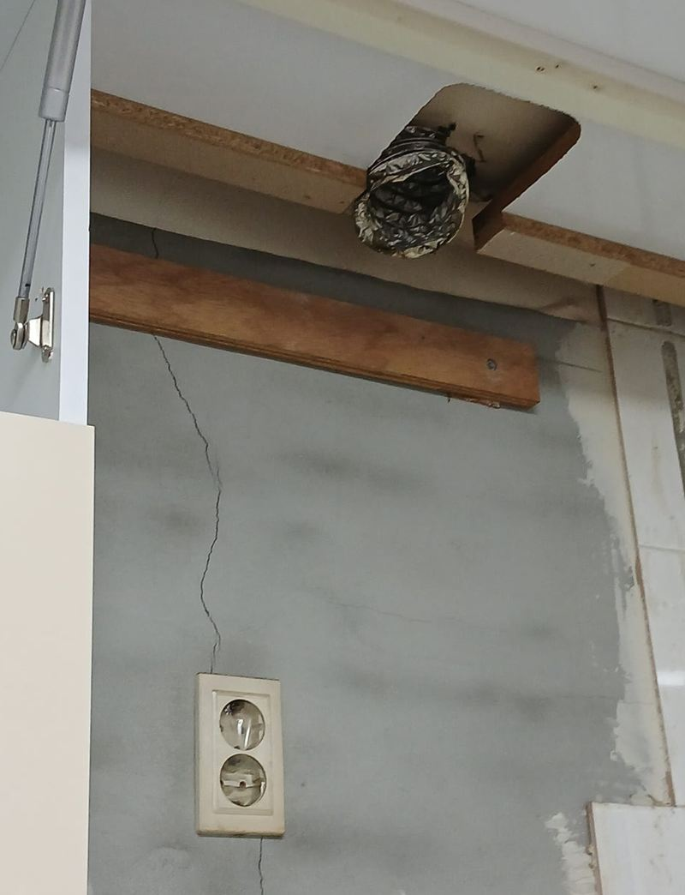
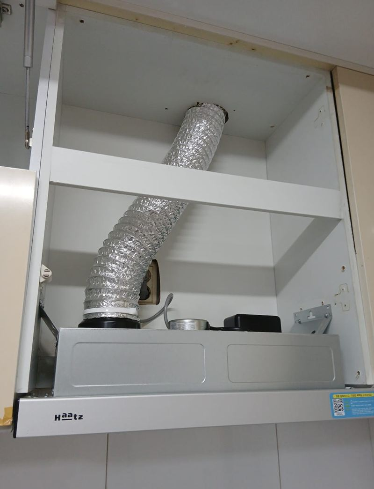

용산 오피스텔 슬림형 후드 교체 비용과 순서

 교체 전교체 후
교체 전교체 후← 밀어서 전후 비교 →
"후드 자바라가 찢어져서 작동을 안 해요. 세입자가 내일 바로 들어오는데, 오늘 안에 바꿀 수 있을까요?" 용산 오피스텔 집주인분의 급한 연락이었어요. 일정을 맞춰 바로 갔더니, 이 집은 자바라가 상부장 안에 묻혀 있어 후드만 떼서는 연결할 수가 없었어요. 후드를 떼고 상부장까지 분해해 자바라 위치를 바로잡은 뒤, 새 슬림형 후드를 연결하고 상부장을 다시 조립했어요.
| 현장 | 서울 용산구 오피스텔 주방 |
|---|---|
| 증상 | 자바라 찢어짐으로 후드 기능 상실 |
| 한 일 | 전원 차단 → 옛 후드 분리 → 상부장 탈착 → 자바라 위치 바로잡기 → 새 후드 연결·고정 → 상부장 재조립·수평 → 흡입·조명·소음 확인 → 폐기물 수거 |
| 일정 | 세입자 입주 전날 당일 처리 |
자바라가 찢어지면 생기는 일
슬림형 후드는 빨아들인 연기를 자바라(덕트)를 통해 바깥으로 보내요. 자바라가 찢어지거나 구겨지면 연기가 그 틈으로 새서 상부장 안과 방 안에 퍼져요. 오피스텔처럼 창이 작고 환기가 어려운 집에선 음식 냄새가 오래 남아요. 이 집도 자바라가 찢어진 뒤로 후드가 제 역할을 못 하고 있었어요.


상부장 안 자바라 연결하기
옛 후드 분리
전원을 끄고 아래와 옆의 고정 나사를 풀어 후드를 조심스럽게 내렸어요.


상부장 탈착
자바라가 상부장 안에 묻힌 구조라 장을 떼야 연결 위치를 바로잡을 수 있었어요. 오래된 오피스텔이라 장이 많이 틀어져 있어, 부품이 상하지 않게 조심히 분해했어요.

새 후드 연결과 재조립
흡입력과 소음을 고려한 새 슬림형 후드에 자바라를 연결하고, 자리에 맞춰 고정한 뒤 상부장을 다시 조립했어요. 틀어진 장이라 수평 맞추기가 까다로웠지만 틈 없이 맞췄어요.

시험과 정리
흡입력, 조명, 소음을 확인하고 떼어 낸 후드와 자바라, 포장재를 모두 가져갔어요.
교체 비용이 달라지는 것
- 상부장 탈착 여부자바라가 장 안에 묻혀 있으면 장을 떼고 다시 다는 작업이 더해져요.
- 후드 크기·종류슬림형인지, 슬라이딩형인지, 폭이 얼마인지에 따라 달라요.
- 자바라 상태새 자바라가 필요하면 자재가 늘어요.
- 일정입주 직전처럼 날짜가 정해져 있으면 미리 연락 주시는 게 좋아요.
집주인분은 "세입자가 들어오는데 후드가 고장 나 걱정이었는데, 바로 와서 상부장까지 떼어 깔끔하게 연결해 줘 든든했다, 오래된 오피스텔인데 새집 같다"고 하셨어요.
임대인이라면 입주 전에 확인하세요
세입자가 들어오기 전에 후드, 수전, 하이라이트처럼 매일 쓰는 설비를 한 번씩 켜 보세요. 입주 뒤 고장이 나면 일정을 맞추기도 어렵고 첫인상도 나빠져요. 공실 기간에 미리 손보면 세입자 만족도 높아지고 연락받을 일도 줄어요.
급한 일정일 때 빨리 하려면
입주 날짜가 코앞이라면 후드 정면과 폭, 상부장 안 자바라 사진을 먼저 보내 주세요. 맞는 제품을 바로 챙겨 갈 수 있어서 현장에서 시간을 줄일 수 있어요.
슬림형 후드 교체 질문
자바라만 바꾸면 되지 않나요?
후드가 멀쩡하면 자바라만 바꿔요. 이 집은 후드도 오래돼 함께 바꿨어요.
슬림형과 슬라이딩형은 뭐가 달라요?
슬림형은 얇게 붙는 형태, 슬라이딩형은 앞판을 당겨 쓰는 형태예요. 상부장 칸에 맞는 걸 골라요.
상부장을 떼면 다시 튼튼하게 달리나요?
원래 자리에 맞춰 다시 고정하고 수평을 맞춰요. 판재가 상했으면 보강해요.
저소음 후드가 있나요?
소음을 줄인 모델이 있어요. 원하시면 그런 제품으로 준비해요.
LED 조명 후드로 바꿀 수 있나요?
요즘 슬림형은 LED 조명 제품이 많아요.
당일 교체가 늘 가능한가요?
제품과 일정에 따라 달라요. 날짜가 정해졌다면 먼저 알려주세요.
다른 후드 현장
후드 정면과 상부장 안 자바라 사진을 보내 주세요.
전화 상담 010-4517-9872